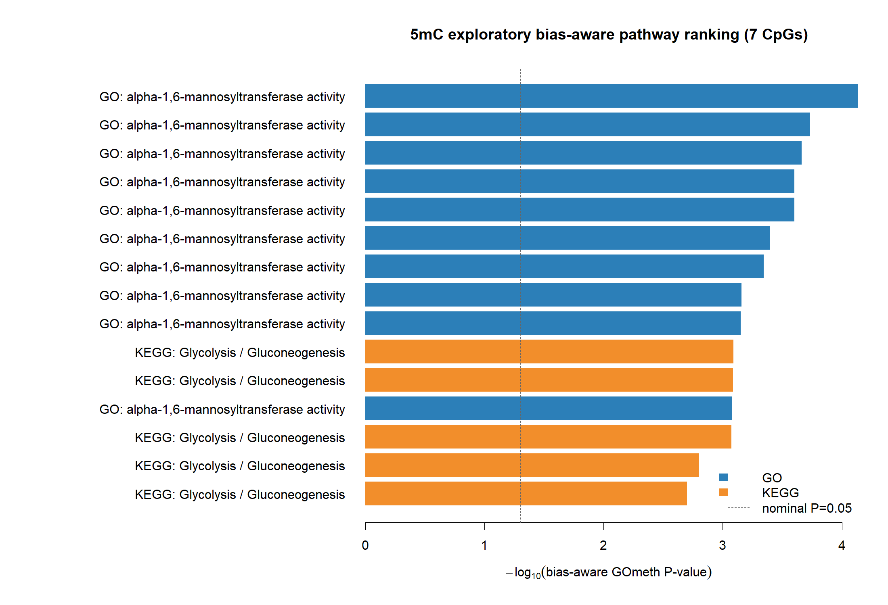
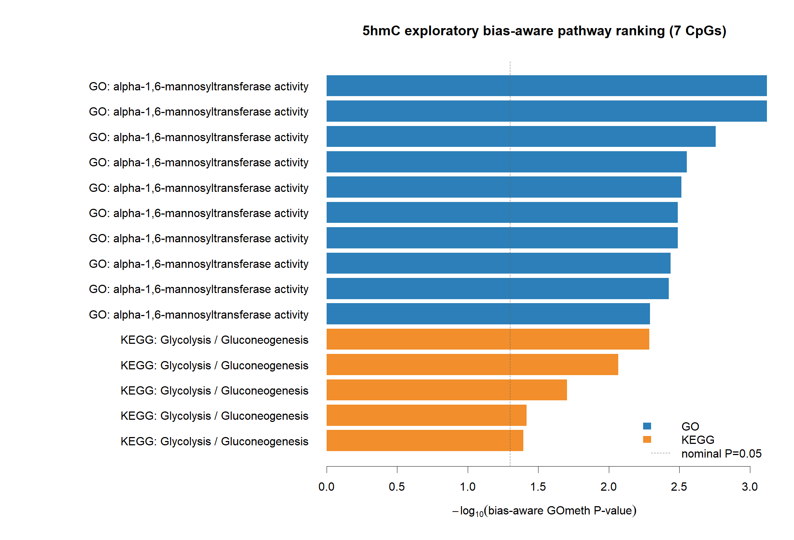

| Modality | Collection | Selected CpGs | Background CpGs | Tested terms | Nominal P<0.05 | FDR<0.05 | Minimum FDR |
|---|---|---|---|---|---|---|---|
| 5mC | GO | 7 | 731661 | 21165 | 409 | 0 | 1 |
| 5mC | KEGG | 7 | 731661 | 372 | 34 | 0 | 0.1048 |
| 5hmC | GO | 7 | 405408 | 21140 | 54 | 0 | 1 |
| 5hmC | KEGG | 7 | 405408 | 372 | 5 | 0 | 1 |


enrichment_summary.csv: exact counts and minimum P/FDR.top_terms_all.csv: top 20 terms per modality and collection.significant_terms_FDR05.csv: only FDR-significant terms; it may correctly contain zero rows.gometh_GO_*.csv and gometh_KEGG_*.csv: complete result tables.